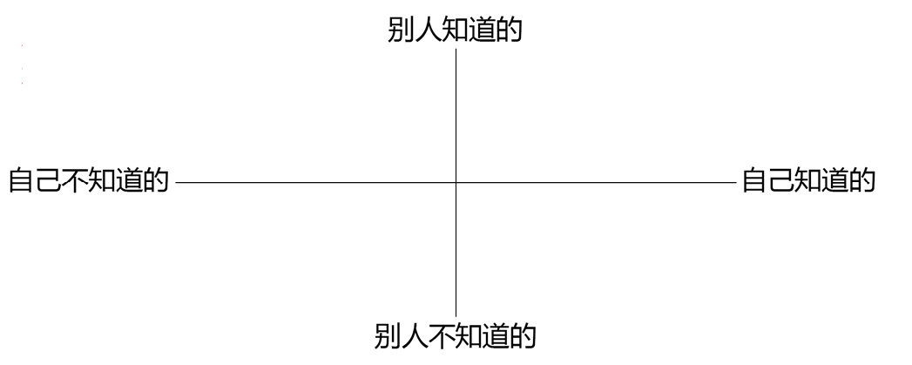
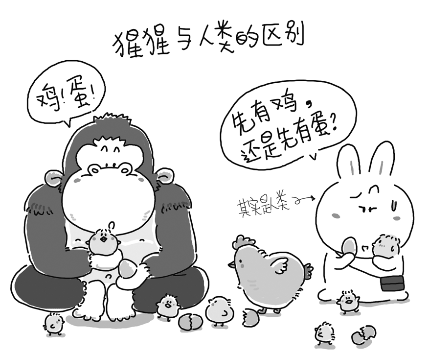
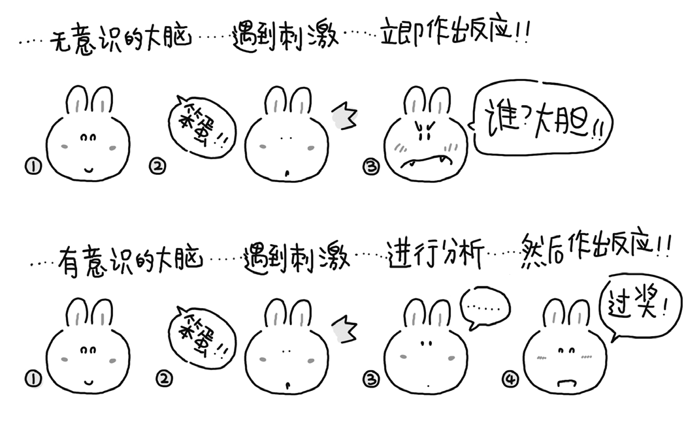

第一章：醒悟
1.孰主孰仆
作为一个人，在这一生中可能遇到的最震撼的经历莫过于发现这样一个神奇的现象：我们竟然可以用自己的大脑控制自己的大脑。
我们可以用锤子去砸钉子。然而，我们却不可能用某一个锤子去砸同一个锤子，也不可能用某一个钉子去砸同一个钉子。大脑和思考之间的关系远比锤子与钉子之间的关系复杂得多。我们用自己的大脑进行思考，然而我们思考的方式和结果往往受上一次思考的方式和结果影响，同时也会影响下一步思考的方式和结果。
可以用一个句子来说明我们的思考可以复杂到什么程度，以及语言和文字有时会被局限到什么程度：
我们甚至可以思考我们的思考方式和思考结果是否确实是合理的思考方式和思考结果。
（人类能将自己的思考作为思考对象的能力被称作“元认知能力”。）
审视一下自己，就可以理解，每个人都能把自己划分为两部分——自己知道的与自己不知道的。有的时候，我们对自身并不了解。很多人都有这样的经历——突然有一天，你很关心的某个人对你说：“你怎么这么自私呢！”这种事情发生的时候，大多数人都会觉得“很受伤”——即便人天性自私，你对他可一直是无私的，因为你知道自己确实是非常关心他的。然而，他现在对你的评价很可能说明你身上有自己并不知道的部分。
这个例子或许也能说明另一个问题：每个人都可以用另外的方式把自己划分为两个部分——别人知道的和别人不知道的。通过这种方式，我们可以把一个人划分成四个区域。

也许对每个人来说，自己身上最为隐秘的部分就是上图中的3号区域：自己不知道的、别人也不知道的自己。
弄清楚“自己不知道的、别人也不知道的自己”究竟是什么，暂时并不重要，真正重要的是：
你现在竟然仅凭自己的心智就意识到了“自己不知道的”和“自己不知道、别人也不知道的”你的存在！
如果我们能用自己的大脑控制自己的大脑，那么我们就应该用自己的大脑控制自己的大脑——事实上这恰恰是人类与猩猩的区别，尽管人类和猩猩拥有共同的祖先。有心理学家认为，人之为人的关键在于人具有特殊的“大脑额叶”。正因如此，人类才具备了其他动物很难具备的一种能力——“反思能力”。得到了反思能力的人类，最终创造了语言，发明了文字，形成了逻辑思考能力，进而成为地球上最强大的物种。
在第〇章“问题”一节中描述的那个场景里，“你”就处于被自己的大脑所控制的状态之中。若非醒悟，很多人可能一生都无从注意这个重要的事实：
你的大脑并不是你，你的大脑是（属于）“你的”大脑。
尽管你用它思考，好像它也在指导你的行为，但是你要明白，你不应该隶属于你的大脑，而应该是它隶属于你，你“可以控制你的大脑”——分清主仆很重要。我们可以用下图来描述“无意识地受大脑控制”与“有意识地控制大脑”之间的区别。

电影《美丽心灵》的主人公原型约翰·纳什就是一个很好的例子：他是历史上第一个广为人知的“用自己的精神战胜了自己的精神病”的人。换言之，纳什通过挣扎学会了控制自己的大脑，不再被自己大脑中的幻觉所控制。
另一个经典的例子是著名的奥地利神经学家、精神病学家维克多·弗兰克。他的父母、妻子、兄弟都死于纳粹的魔掌，而他本人则在纳粹集中营里受到残酷对待。经历了无数的波折与思考后，他明白了一件事：“人所拥有的任何东西，都可以被剥夺，唯独人性最后的自由——也就是在任何境遇中选择一己态度和生活方式的自由——不能被剥夺。”
… everything can be taken from a man but one thing: the last of the human freedoms — to choose one’s attitude in any given set of circumstances, to choose one’s own way.
— Viktor Emil Frankl, Man’s Search For Meaning
换一种方法来表述，那就是经过了长期思考，弗兰克终于意识到自己其实可以控制自己的大脑，而不是被自己的大
脑左右！于是，在最为艰苦的岁月里，他选择了积极向上的态度。他没有悲观、绝望，相反，他在脑海中设想，自己重获自由之后该如何站在讲台上，把“关于集中营的心理学”讲给来宾们听。凭着这种积极、乐观的思维方式，尽管身处集中营，弗兰克却可以让自己的心灵越过牢笼的禁锢，在自由的天地里任意翱翔。
这就是所谓的“运用心智获得解放”。不要再让自己“跟着感觉走”，成为大脑的奴隶，而是翻身做大脑的主人。
2.何谓心智
心智（Mind）究竟是什么？
简单地说，一个人的心智就是其过往获得的一切知识及经验的总和（包括基于这些知识和经验造就的思考方法、思考模式）。心智与智商不同。大多数人都拥有正常的智商，但并非每个拥有正常智商的人都拥有正常的心智。许多人的心智仍处于未开启的状态。我们常看到所谓的“聪明人办傻事”，其原因基本上都是他们的心智尚未开启。他们即使做出了错误的判断也会振振有词——绝非强词夺理，而是义正词严、双目炯炯、真诚满怀。
关于“心智的开启”，其实有很多种说法，比如，俗语中的“开窍”，佛教禅宗中的“顿悟”，现代心理学术语中的“打破旧的格式塔（Gestalt），重建新的格式塔”。心智被开启之前，一个人可以用他作为人类理所应当拥有的智商正常地生活——当然有好有坏。然而，当一个人的心智被开启之后，他将面临一个崭新的世界——尽管依然有好有坏。在这个新的世界里，一切都可能与从前不一样，因为他要用开启过的心智重新去理解、去判断。
当一个人认知一系列正确的道理后，可能会将心智开启，但有的时候（甚至是更多的时候），结果可能完全相反。
日常生活中常常可以看到这样的例子：一个道理明明非常正确，却因为讲述道理的人由于某件事情被戳穿，露出伪君子的嘴脸，而使很多人不再相信那个原本应该被笃信的道理。例如，“做事只要踏实、认真，事业就会做大”，这原本是非常朴素而又正确的道理，可偏偏整天把这句话挂在嘴边的唐骏被人揭出老底——他的学历是假的，他可一点都不踏实！于是，很多人“开窍”了，“顿悟”了，得出结论：“再也不相信这种鬼话了！”
骗子想要成功行骗,必须把想让别人相信的谎言掺到大量的真理之中。鬼话连篇是骗不了人的。
无论是正向还是反向，心智一旦开启，就会不断自我积累，自我过滤，直至根深蒂固。人与人之间心智力量的差异，就是这样一点点地积累，最终天差地别。既然一个人的心智是他的知识和经验的总和，当然也会包括他的思考方法和思考模式。因为无论是吸收知识还是总结经验，都需要经过思考才能得出结论。在此过程中，他的思考方法和思考模式都会多多少少产生变化，根据新的知识和经验，或巩固、或调整、或否定、或重建……
所以说，心智这东西“上不封顶、下无保底”。心智一旦开启，就可能因为学习而像病毒一样疯狂发展，与此同时，“学习能力”也会相应地大幅增长。于是，心智可以发展，可以培养，可以重建，甚至可以反复重建——怎么可能封顶？然而，反过来，如若这一过程中出现一些差错，那么心智的发展就有可能停滞，甚至倒退，弄不好还会“痴心不得反癫狂”——怎么可能保底？这就好比有些人一辈子都是“原始人”；有一些人“开窍”了，演化成了“现代人”，甚至尼采所说的“超人”；同时还有一些人也“开窍”了，退化成了“猴子”。
此处的“超人”指“over-man”，而非“superman”。
3.我的案例
10元钱的收益
这个故事发生在1984年。那年暑假，母亲竟然给了我10元钱，让我参加我们那里的第一个计算机学习班。要知道，那时候10元钱的价值，可能超过现在的1000元——当时我父母每月的收入全加起来也不过100元多一点。
事情的经过大致是这样的。
那时我还在读初中二年级，在快到暑假的一天，班主任拿来一张纸贴在黑板上，说是少年宫要办个学习班，谁有兴趣就去看看。第二天，我们一群同学顶着太阳打打闹闹地去了，其实当时连是什么学习班都不知道。许多年后的今天，我依然觉得记忆中的那个日子亮得耀眼。
到场的时候，我们才发现自己来得太晚了，教室里早已挤满了人。我们只好挪到教室最后面，站在桌子上，才勉强看到黑板。又等了好久，终于看到一位瘦瘦的男老师把一个键盘接到一台单色显示器上（那是R1机型，直到1986年我才见到AppleII），做了一些让我们眼花缭乱的演示。今天，应该没有谁会对屏幕上能够显示一个用字母拼出来的几何图形感到兴奋了吧？但当时，我们就是很兴奋，教室里的孩子们不断发出惊叹和欢呼声。
我清楚地记得，当那位男老师说“今天就到这儿吧”时大家发出的失望的叹息。那位老师又接着说：“明天下午开始正式上课，报名参加的学员，要交10元钱学费。”我几乎是一路跑着回家的，跟妈妈一讲，她一点都没犹豫，只是说：“等你爸爸回来。”第二天，我拿着爸爸早上给我的10元钱，兴冲冲地跑去找前一天与我同行的一个同学（我们班主任的儿子）。结果他说他不去了，因为他妈妈说学那个没什么用。
我颇为扫兴地一个人走到少年宫，手在兜里紧紧攥着那10元钱。要知道，10元已经是当时面值最大的人民币了。
走进少年宫三楼的教室，我才发现它其实特别大，昨天是因为塞满了人才没觉得。而今天，算我在内一共只有5个学生，后来才知道，其中的一个还是少年宫的工作人员。
那期计算机班的总收入为35元——有个学生中途退班了，她爸爸要回了5元学费。
许多年后，我跟母亲提起这件事，她说她只是想让我能过一个不无聊的暑假而已。不过她倒是清楚地记得，当父亲听说报班需要10元钱学费的时候，只说了一句话：“多学点东西总是好事儿。”再后来，有一次我回老家，见到初中的班主任，闲聊之间提起这件事，她居然一点都不记得了。想了想，我没再多说什么，也没接着问她儿子现在在做什么。
学习班之后的岁月里，摆弄计算机给我带来了无数心灵愉悦，这些暂且不论，只说一件事——在编写《TOEFL核心词汇21天突破》的过程中，倘若我没有稍多于常人的那点计算机知识，能自己编写一些批处理脚本，就不可能在那么短的时间里完成那样海量的工作。而且，如果没有这些技能，就算再花几倍的时间，也很难拿出具有与《TOEFL核心词汇21天突破》同样的质量的作品。而最终，质量保证了销量。
《TOEFL核心词汇21天突破》这本书，定价29元，自2003年上市至今，每年至少销售4万册，最多的一年是7.5万册，而我的版税税率是12%，所以，这些年来这本书为我带来的税后收入超过100万元——这可是当年我参加计算机学习班学费的10万倍不止。我常常跟母亲开玩笑，说她比巴菲特牛多了，30年不到的时间里，投资回报率超过百分之一千万……
可问题在于，当年我在少年宫学习计算机程序语言的时候，怎么可能想象得到，在20多年后的某一天，我需要先用软件调取语料库中的数据，然后用统计方法为每个单词标注词频，再写一个批处理程序从相应的字典里复制出多达20MB的内容，重新整理……
词频指一个单词在一定范围的语言材料中出现的频率，每个单词的词频并不相同。在汉语里，最常见的汉字是“的”，然后是“了”，像“昶”或者“鬯”这样的字，很多人根本就没见过。在英文中，最常见的单词是“the”，然后是“of”，像“exorbitant”这样的单词，词频排序在3万开外。
顺便说一下，统计学是我上大学时唯一凭兴趣去学的课程，之后却被事实证明，这是我在那个阶段学到的最有用的知识——它是现代科学所有领域必需的数学知识。当年我翻阅统计学书籍的时候，是万万不会想到有一天我会把那些理论应用到英语教学上的。事实上，在我大学毕业的时候，我都完全无法想象自己有一天会去教英语！而长时间来学生们对我是“讲课最精彩的老师”这一评价，应该与我练就的超强说服能力有关——因为我大学毕业之后从事的第一份工作是销售。可是，我练就说服能力的目的根本不是为了有一天去当一个优秀的老师，只不过是为了赚钱糊口。
盲打是否值得学
另一个故事起源于我接触计算机之前。由于有一位精通英语和俄语的父亲，当我的同学连打字机都没见过的时候，我家里就已经有好几台打字机了，我也在很年幼的时候就已经知道应该如何操作键盘了。然而，我到了将近25岁，也就是接触了计算机10年左右的时候，依然不会盲打——尽管学校有专门的打字课（那个时候很多学校的所谓计算机课，实际上就是练习王码五笔字型中文输入而已）。
在很长的一段时间里，我常言之凿凿地对同学们说：“练习打字完全是浪费时间。”
先来说说五笔字型。我认为王码五笔字型输入法是给打字员用的。为什么要学它？难道你将来想要当个打字员？我总觉得五笔字型只是一种抄写输入法，因为用它输入时只能边看边打。而对真正创造内容的人来说，先用纸和笔写出来再录入电脑，还有比这更荒谬的事情吗？学习拆字方法已经很累人了，还要练什么指法，见鬼。更不用说这种所谓的输入法对思考的干扰——不仅要把字拆开再输入，还要按照莫名其妙的方法拆字。
再说盲打。我现在不是盲打，只用两根手指输入速度就已经挺快的了（至少比手写快）。我还有必要学习什么五笔字型和盲打吗？哈哈，我的父亲一辈子也都用两根手指敲键盘！
在我有了这些定见很久之后，另外一件事情发生了。
1997年前后，我25岁左右。当时互联网上除了聊天室和论坛，几乎没有什么实际的应用。时逢Windows终于捆绑了哈尔滨工业大学开发的“微软拼音输入法1.0”，某天下午，当我在网上和一位永远都不会知道她是谁的女生放肆地聊了两个小时之后，突然发现自己竟已无师自通地学会所谓的“盲打”了！之后的一段时间里，身边甚至有很多人羡慕我打字速度快。为了让自己的打字速度再快一点，我索性花了差不多20分钟，把原本默认的“全拼输入”改成了“双拼输入”。而这还远远不够。后来，我增设了“南方模糊音”（不区分z/zh、c/ch、s/sh），又把打字速度提高了一些。
这是我第一次意识到“有些认识，哪怕是简单的常识，也需要亲身经历后才能真正体会”。只有拥有无与伦比的打字速度，才能体会打字速度快的好处。
心智真正成熟的人在一些情况下能够做到无须亲自经历，仅凭思考就得到深刻的体会。
打字速度提升后，我发现自己不再讨厌在读书的时候做笔记了，因为在键盘上敲字相对于纸和笔来说轻松太多。我开始大段地记录感想，有时甚至干脆整篇摘抄原文！真正体会到读书时做笔记、甚至大量地做笔记究竟有多大好处后，我突然明白自己过去拒绝学习盲打的想法是多么荒谬。而当时，就算没有异性的刺激，盲打也是顶多只花一星期就可以搞定的事情，我竟然仅仅由于懒惰便拒绝了。如果，哪怕5年前，我花上一个星期学会盲打，那么，我可以多写多少读书笔记、积累多少文字呢？更何况，10多年前，我就有机会、并且完全可能学会盲打。天哪，我浪费了多少时间！
我盯着电脑里存着文字资料的文件夹发呆，身虽无所动，心却早已懊悔不已。我永远都不会忘记那一瞬间的颤栗，就像是在噩梦中掉下悬崖后突然惊醒。只说过去的荒谬是出于懒惰和幼稚，不免过于简单了。事实上，这应该归因于我的心智能力不够强大。心智不强，才导致我根本没有意识到自己只不过是懒惰，甚至振振有词、洋洋自得。最要命的是，我与原本可能的巨大收获一再错过，却又毫不自知。可怕！
许多年后，我开始写博客，大约从2005年年底开始，每天必写，迄今为止不知道写了多少字，能明确的是发布的文章总数已经超过3000篇。这本书的初稿，也是先发布在网志上的。
当然，有些时候写完了并不满意，所以只能存为草稿，或待将来修改之后再发，或几经修改依然不满意，只好删掉。但我在相当长的时间里依然可以做到每周至少更新3篇，多的时候甚至达到一天3篇。
因为更新得勤，也因为喜欢的读者口口相传，我的网志每天的访问量很惊人，Alexa全球排名一度冲进1万。常有朋友问我，天天写那么多东西不累吗？说实话，真的不累。因为对我来说，打字已经是内建的能力，敲击键盘已经是自然的动作，思考才累——但这是没有办法的事情。我常想，如果当年我没有“顿悟”，现在还处于两个手指敲键盘的阶段，后面很多事情就不会发生了——起码，我的网志就可能不存在了，当然，现在这本书就更不可能存在了。
小结
去少年宫学程序语言，是我运气好——学了就学了，全当玩了；会了就会了，需要用就用上了，而且许多年来一直在用。这里面最重要的根本不是聪明，而是运气——有一对认为“多学点东西总是好事”的父母。曾经拒绝学习盲打，是我愚钝，可我还是运气足够好，在多年之后醒悟过来。但正是因为当初的愚钝，我肯定错过了很多现在已经无法知道究竟是什么的东西。
然而，这两段经历能够说明的道理却是非常惊人的：人们可能会基于一模一样的原因做出截然相反的决定。
当有机会学习一项技能的时候，人们常常会问：“学这东西有什么用呢？”其实，在尚未学习之前，对提问者来说，答案只能是“不知道”——尽管很多书籍中都已经花费大量的篇幅去论述“为什么要学习（某项技能）”。而“不知道那东西（对自己）有什么用”，恰恰是一部分人（更多一些）决定不学的原因，同时，它也是另一部分人（更少一些）决定去学的原因。
为了表述方便，让我们把“因为不知道那东西有什么用而决定学习的人”称为“甲”，把“因为不知道那东西有什么用而拒绝学习的人”称为“乙”。
在更多的时候，甲很可能想都没有想过“学这东西有什么用”。他从来都不问用途，只是自顾自学去了。许多年后，他自然而然地找到了这项技能的用处，享受了其已有技能所带来的种种好处。于是，这个既有经验成为他心智的一部分。当遇到新的学习机会时，他会自然而然地采取同样的策略——管它有什么用呢，学呗，学了总有用处。他也会自然而然地理解并相信“技不压身”的道理。
说完甲我们来说乙。乙当然永远不会知道这东西对他究竟有什么用，因为他从未拥有过这项技能，更不可能有机会亲身体会。随着时间推移，他凭自己的经验能够得到的结论只能是：“我没学也没什么。”也许有一天，当他因为没有学习这项技能而遇到一点尴尬的时候，可能会慨叹：“当初不懂事，要是学过就好了……”然而，这对他来说，仅限于慨叹。再次遇到学习机会的时候，他依然会选择放弃，只不过除了“不知道学它有什么用”之外还多了一个理由：“现在学也来不及了。”这种拒绝学习的判断，渐渐融入他的心智，难以更易，最终，当他再次面临同样的机会时，他还会与过去一样，做出同样的选择。
认真审视一下自己，再观察一下身边的人，你就会发现：像乙一样的人比较多，比像甲一样的人多得多。
当然，还有很多人有时候是甲有时候是乙——正如之前的我那样。
问题的关键在于，做出截然相反决定的理由竟然是一模一样的！人们通常认为，恰当的逻辑训练能够提高一个人做出正确选择决定的几率。可在上述情况下，大多数逻辑都无能为力。这种情况在生活中并不罕见，相反，比比皆是。父母教育孩子的时候被孩子驳得哑口无言就是这类情况——并不是孩子不讲逻辑，也不是孩子的观点正确，只是他就是无法理解父母所要传递的经验或者道理。他们不相信的理由和父母相信的理由很可能是一模一样的！历史上也常常出现这种情况——其实目的都是“为了人类更好的明天”，可偏偏出现了对立的两派人，他们为了原本一模一样的理想争执不休，甚至“抛头颅”、“撒热血”，牺牲几代人的福祉。
比如，所谓“水火不相容”的“社会主义阵营”和“资本主义阵营”。
看穿这一切，摆脱自己的局限，需要心智的力量。